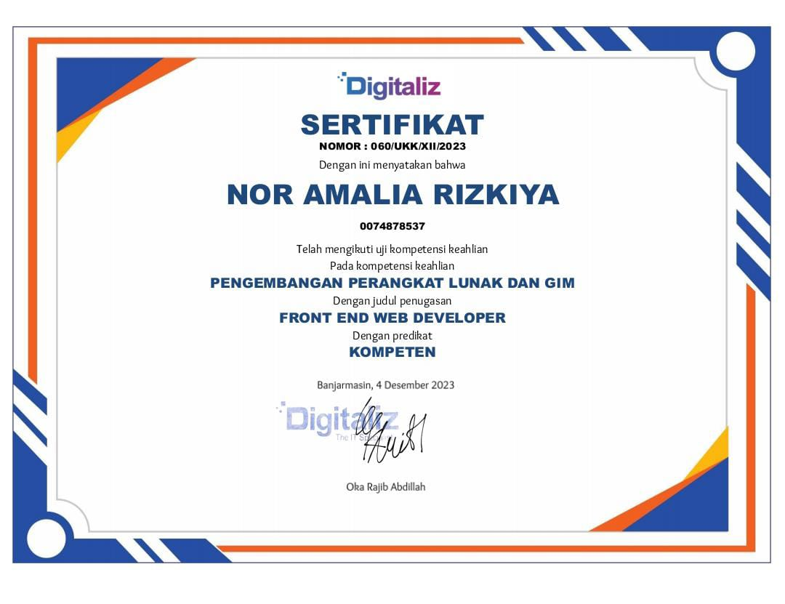

Sertifikat
Front-end Web Developer
Web Developer

Saya adalah seorang web developer yang memulai perjalanan saya di bidang teknologi saat sekolah. Saya telah belajar berbagai teknologi web seperti HTML, CSS, JavaScript, dan PHP, serta framework Laravel untuk pengembangan aplikasi web. Selama di sekolah, saya berkesempatan untuk mengerjakan beberapa proyek yang membantu saya memahami bagaimana membuat dan mengelola website yang interaktif dan fungsional.
Di sekolah, saya mendalami dasar-dasar pengembangan web dan berhasil mengerjakan beberapa proyek yang menantang. Melalui kurikulum yang berbasis praktik, saya belajar bagaimana membangun website dari nol, mulai dari struktur front-end hingga logika back-end. Saya juga mendapatkan pengalaman dalam menggunakan database untuk menyimpan data pengguna dan mengelola transaksi secara aman.
https://github.com/elylialya/Startik.git
https://github.com/elylialya/MachineLearning.git
https://github.com/elylialya/Web-Apotek-Startik.git